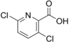

clopyralid

Has synonym(s): 3,6-dichloro-2-pyridinecarboxylic-acid
Definition: Clopyralid (3,6-dichloro-2-pyridinecarboxylic acid) is a selective herbicide used for control of broadleaf weeds, especially thistles and clovers. Clopyralid is in the picolinic acid family of herbicides, which also includes aminopyralid, picloram, triclopyr, and several less common herbicides. For control of creeping thistle, Cirsium arvense, a noxious, perennial weed, clopyralid is one of the few effective herbicides available. It is particularly damaging to peas, tomatoes, and sunflowers, and can render potatoes, lettuce, and spinach inedible. It does not affect grasses (family Poaceae).Clopyralid is known for its ability to persist in dead plants and compost, and has accumulated to phytotoxic levels in finished compost in a few highly publicized cases. This first came to light in Washington, when during 2000 and 2001, residues of clopyralid were detected in commercial compost, and compost made at a municipal site damaged tomatoes and other garden plants planted in it. Word quickly spread to other local and state governments, and in 2002, DowAgro, the manufacturer of clopyralid, voluntarily deregistered it for use on domestic lawns in the US and it is banned in several US states, but it is found in consumer products in Europe such as Scotts Verdone Extra and Vitax Lawn Clear 2.Clopyralid is licensed for lawn use in France and under these names:
Source: Wikipedia
Wikipedia Page (Something wrong with this association? Let us know.)
Wikidata Page (Something wrong with this association? Let us know.)